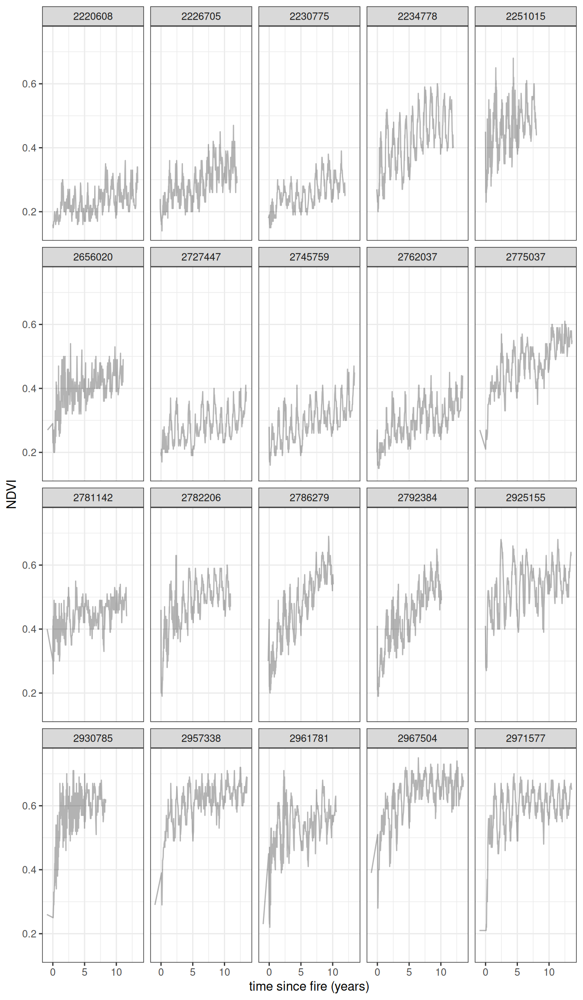

EMMA Model Summary
Modeling vegetation postfire recovery data
Model last updated at 2025-05-29 01:03:23.712071.
Model Overview
The details are given in [@slingsby_near-real_2020; @wilson_climatic_2015], but in short what we do is estimate the age of a site by calculating the years since the last fire. We then fit a curve to model the recovery of vegetation (measured using NDVI) as a function of it’s age. For this we use a negative exponential curve with the following form:
\[\mu_{i,t}=\alpha_i+\gamma_i\Big(1-e^{-\frac{age_{i,t}}{\lambda_i}}\Big)\]
where \(\mu_{i,t}\) is the expected NDVI for site \(i\) at time \(t\)
The observed greenness \(NDVI_{i,t}\) is assumed to follow a normal distribution with mean \(\mu_{i,t}\) \[NDVI_{i,t}\sim\mathcal{N}(\mu_{i,t},\sigma_)\]
An additional level models the parameters of the negative exponential curve as a function of environmental variables. This means that sites with similar environmental conditions should have similar recovery curves.
Results
Environmental Controls on Ecosystem Recovery
These parameters represent the relationship of the following environmental variables to the recovery trajectory.
Recovery Trajectories
The plot below illustrates some example recovery trajectories. It currently just shows the top 20 cells with the most observations.

Spatial Predictions
Maps of spatial parameters in the model.